Duże oko v3 — montaż
Na obrazach turkusowa jest część dokładana w danym kroku. Części zamontowane wcześniej mają zwykłe kolory, a tych, których jeszcze nie ma, nie widać. Druty są czerwone, narzędzia szare.
Narzędzia: imbus 2 mm (wkręty M4 kardana), wkrętak PH1 (wkręty orczyków), imbus lub wkrętak do M3 ISO 7380, kombinerki (drut), pęseta.
Drut „Z” — gięcie
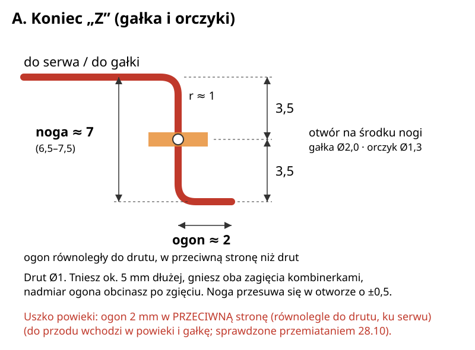
Drut Ø1, 4 odcinki: gotowe ok. 77 / 71 / 104 / 79 mm. Tnij każdy ok. 5 mm dłużej. Oba końce gniesz w „Z”: noga ok. 7 między zagięciami, promień ok. 1, ogon ok. 2. Otwór wypada na środku nogi.
W uszku powieki ogon 2 mm zaginasz w przeciwną stronę: równolegle do drutu, w stronę serwa, nie do przodu (do przodu wchodzi w powieki i gałkę).
1. Trzpienie kardana
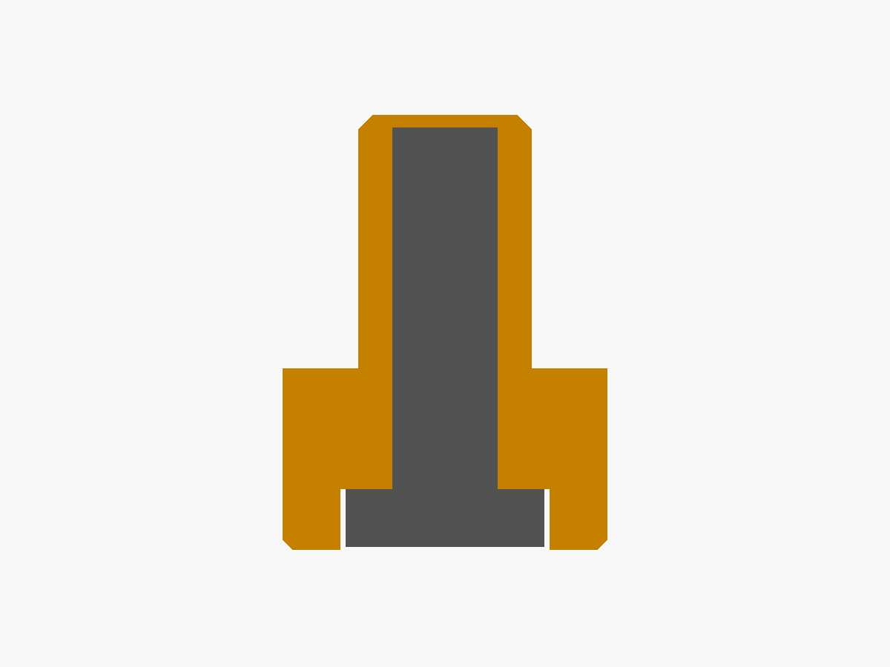
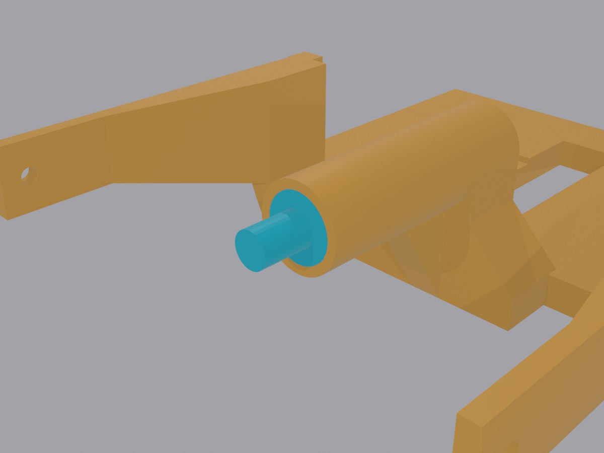
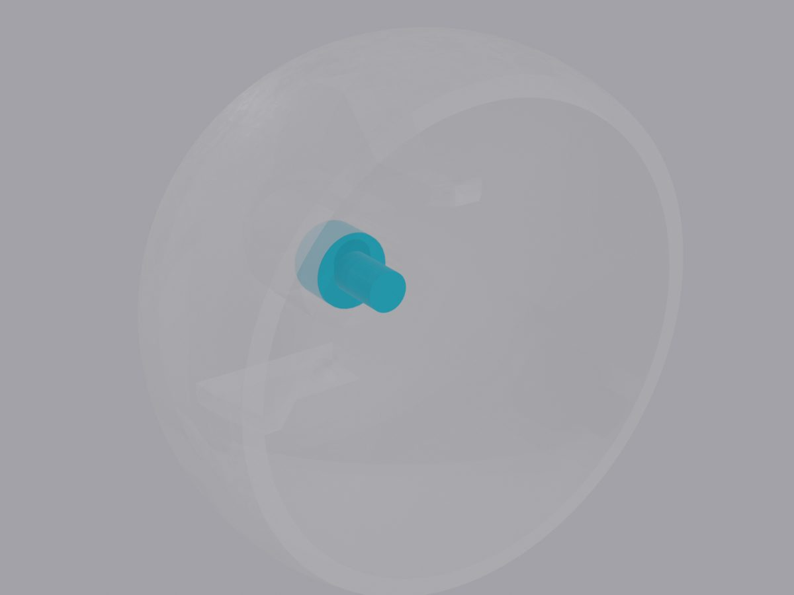
W każdy drukowany trzpień wkręcasz od strony kołnierza wkręt M3 × 10 ISO 7380, aż łeb schowa się w kieszeni; nie dokręcaj na siłę. Przymierz trzpień w otworze kardana: ma wejść ręcznie, bez luzu na boki, inaczej weź wariant T4.9 albo T5.0.
Kołnierz wklejasz CA w gniazdo na czole słupka kardana (trzpień do przodu) i w gniazdo piasty gałki (trzpień do tyłu), łbem M3 do dna gniazda. Za ciasny kołnierz zamień na wariant K9.2.
2. Orczyki i przedłużenia
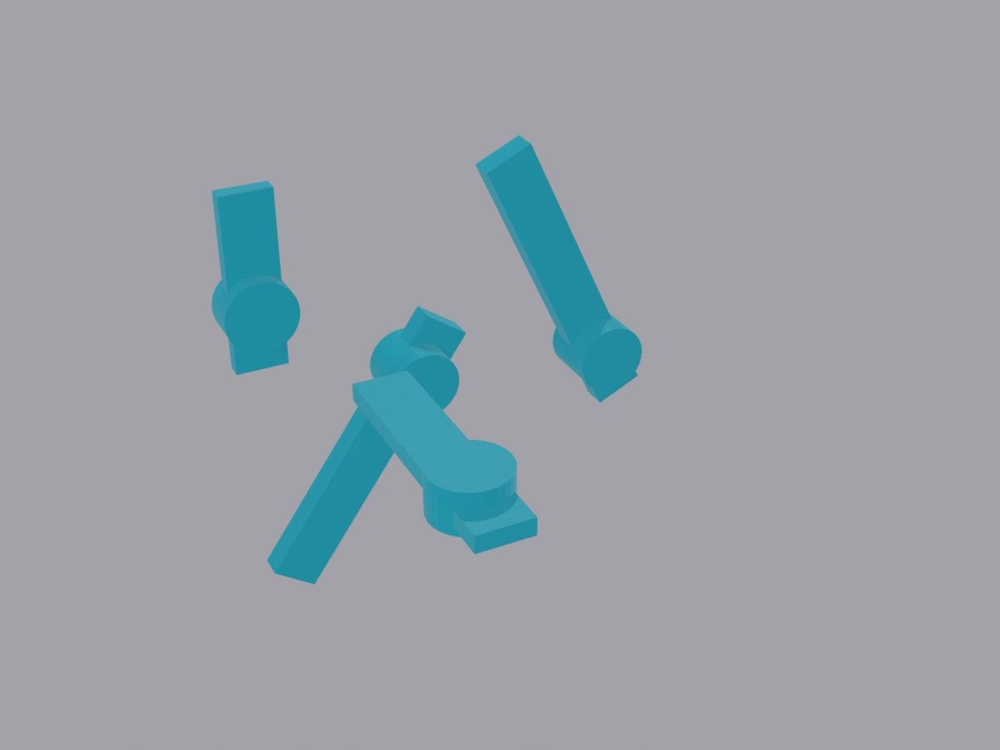
Przedłużenie kładziesz na płaską stronę orczyka (od wkrętu, nie od serwa): ramię wchodzi w rowek między ściankami, pierścień piasty w otwór Ø7. Dwa kołki z drutu Ø1 przez otwory przedłużenia w otwory orczyka (za ciasno: rozwierć orczyk wiertłem 1,0), obetnij równo. Kropla CA na styk. Pręty idą w fabryczne otwory orczyków L–P (17,5) i G–D (11,5). Odstaw do związania.
3. Serwa G–D, powieki górnej i dolnej
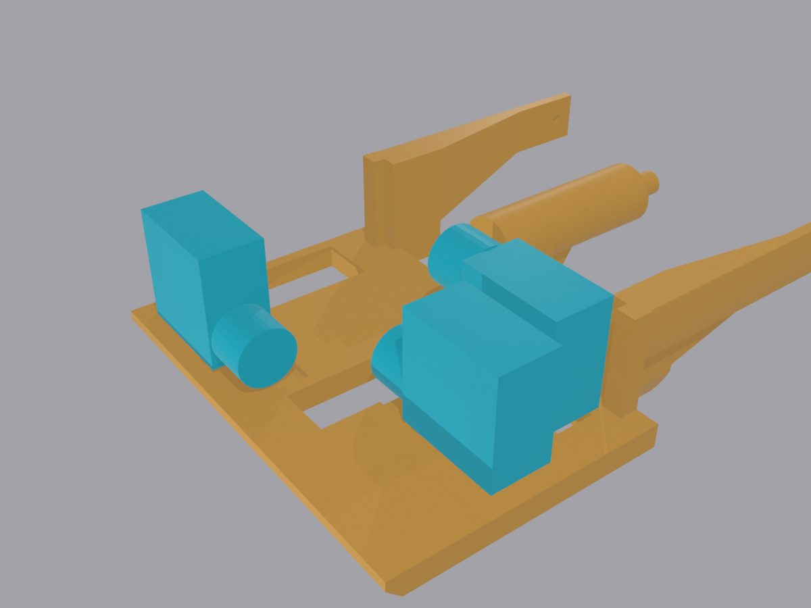
Kabel MG90S wychodzi po stronie wałka, przy spodzie. G–D stoi wałkiem do góry, więc jego kabel też idzie górą (przejście w płycie zostaje puste). Serwa powiek stoją wałkiem na dole, kabel wychodzi w płytę: przed klejeniem wytnij w płycie wnęki 4 × 8 od zewnętrznej krawędzi (rysunek niżej). Miejsce sprawdź serwem na sucho i zaznacz markerem.
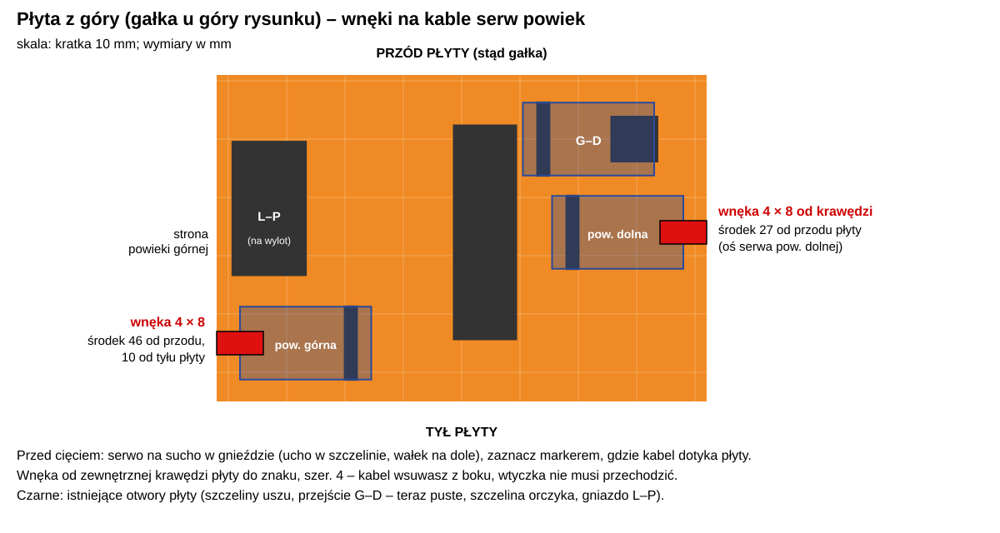
Każde serwo stawiasz na płycie: dolne ucho w szczelinie, wieżyczki powiek nad wnękami. Klej na gorąco; serwo powieki górnej kleisz tylko od tyłu i z boków, bo przed nim ląduje ucho serwa L–P.
Serwo L–P możesz wkleić od razu: wkręty orczyków G–D i powieki dolnej dokręcasz wkrętakiem pod skosem obok niego.
4. Kardan na słupek
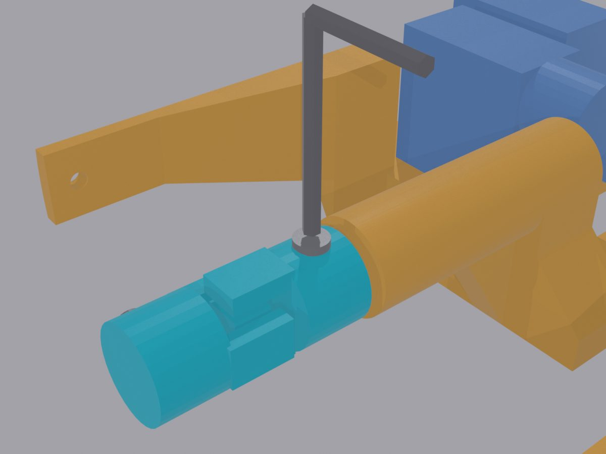
Piastę tylną kardana nasuwasz na trzpień słupka, wkręt dociskowy M4 do góry. Dokręcasz imbusem 2 z góry; gałki jeszcze nie ma, wszystko jest otwarte.
5. Gałka na kardan
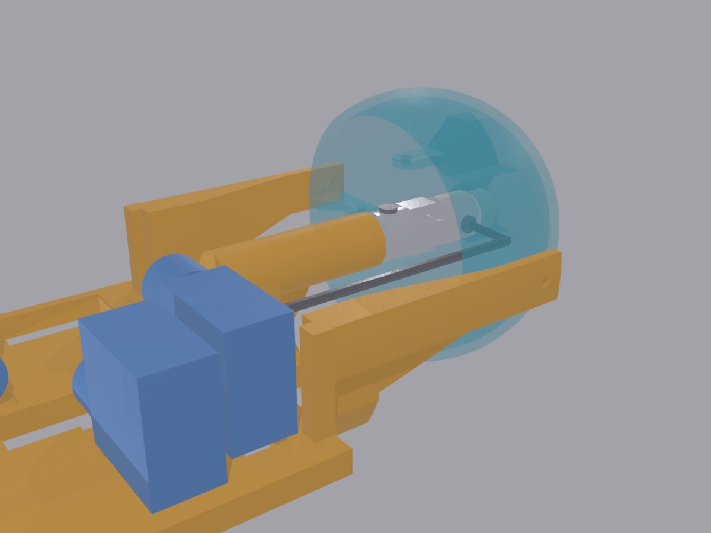
Wsuwasz gałkę od przodu, trzpień gałki wchodzi w piastę przednią; wkręt M4 tej piasty patrzy w −x. Dokręcasz go imbusem 2: krótkie ramię promieniowo, długie wychodzi do tyłu przez otwór tylny gałki na x ≈ −18. Klucz przekładasz co ok. 60°.
6. Pręt G–D
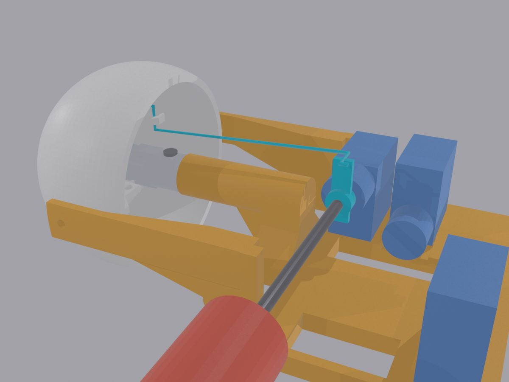
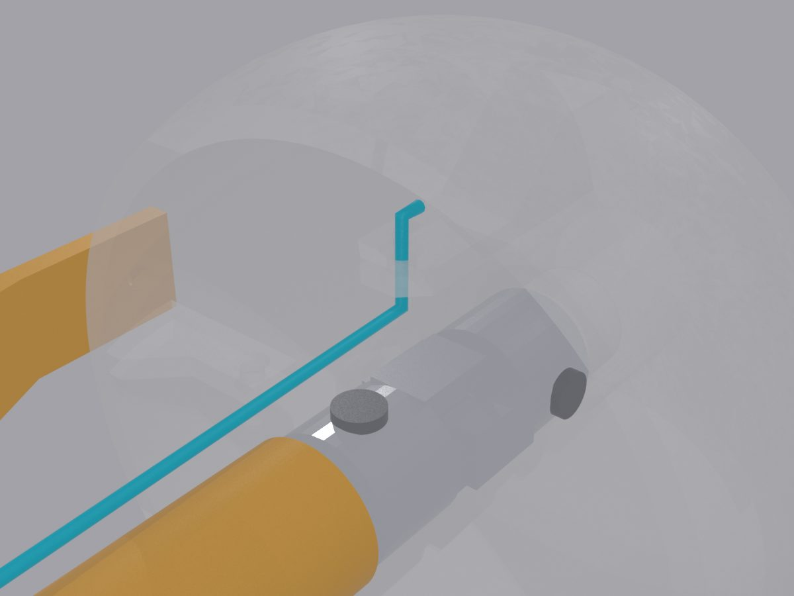
Zagięcia pręta są w płaszczyznach prostopadłych: noga przy gałce wzdłuż y gałki, przy orczyku wzdłuż x. „Z” wkładasz kombinerkami w otwór słupka G–D przez otwór tylny; noga 7 z otworem na środku, zagięcie do pręta od strony osi, pręt biegnie pod słupkiem.
Drugi koniec w otwór 11,5 zdjętego orczyka. Serwo na 1500 µs, orczyk ramieniem do góry, wkręt wkrętakiem z prawej, pod skosem obok serwa L–P.
7. Powieki
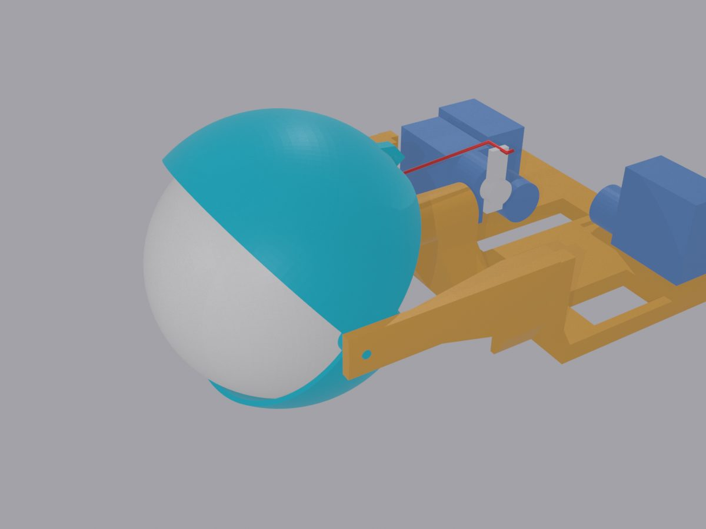
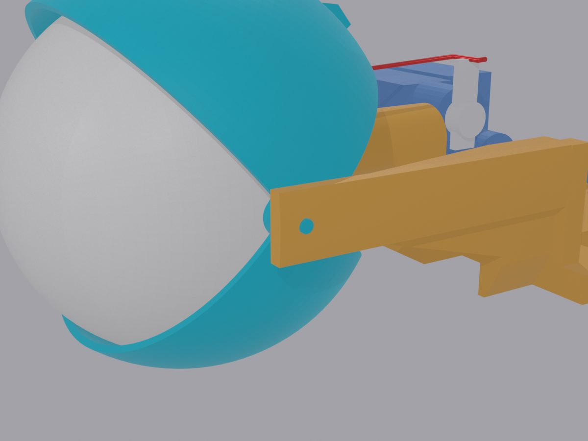
Najpierw dolna, potem górna; uszy wsuwasz od przodu między słupki. Oś to wkręt M2 × 6: od zewnątrz przez słupek i ucho górnej, wkręcony w ucho dolnej, aż łeb dotknie słupka, potem pół obrotu w tył. Bez kleju. Łeb przechodzi w szczelinie tuby.
8. Druty i orczyki powiek
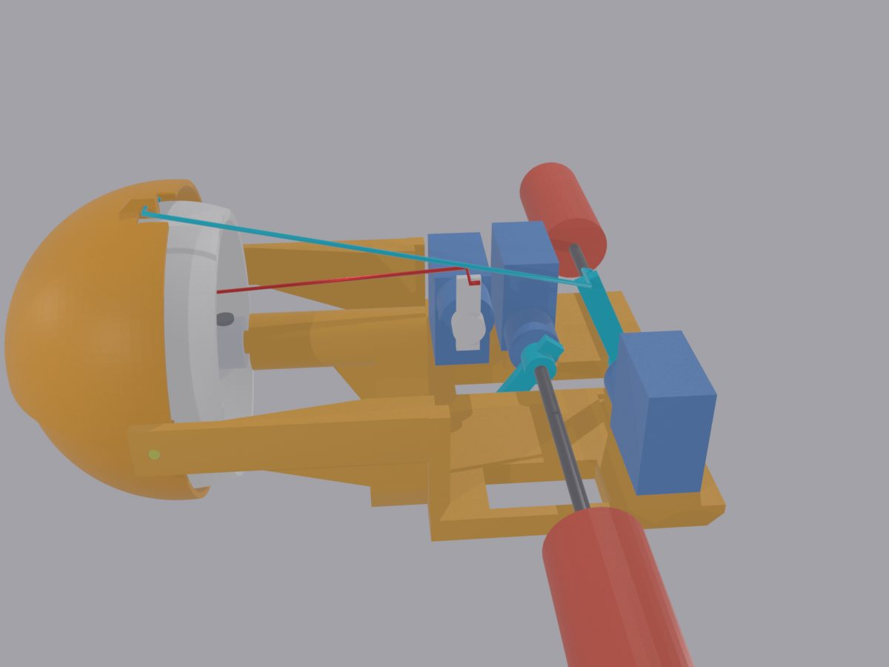
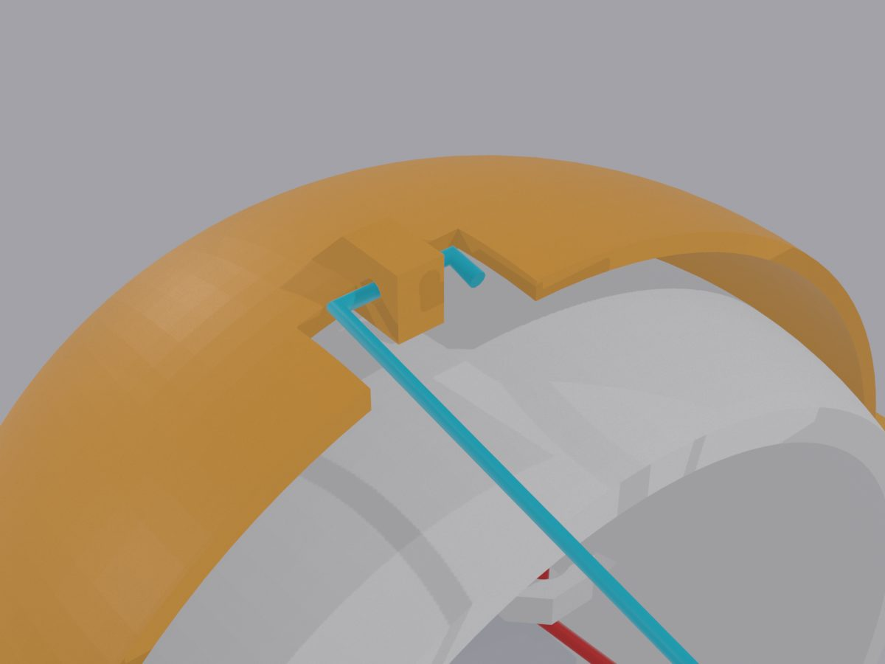
„Z” wkładasz w uszko powieki (noga 7, otwór na środku, uszko gr. 2,8 mieści nogę 6,5–7,5; zagięcie do drutu górnej na +x, dolnej na −x), drugi koniec w otwór 25 przedłużenia. Ogon w uszku (2 mm) zaginasz w przeciwną stronę: równolegle do drutu, w stronę serwa.
Powiekę zamykasz, serwo na „zamknięte”, orczyk nasadzasz: górny 25° od pionu ku przodowi, dolny 35° w dół ku przodowi. Wkręt górnego wkrętakiem z lewej, dolnego z prawej, pod skosem obok serwa L–P.
9. Serwo L–P
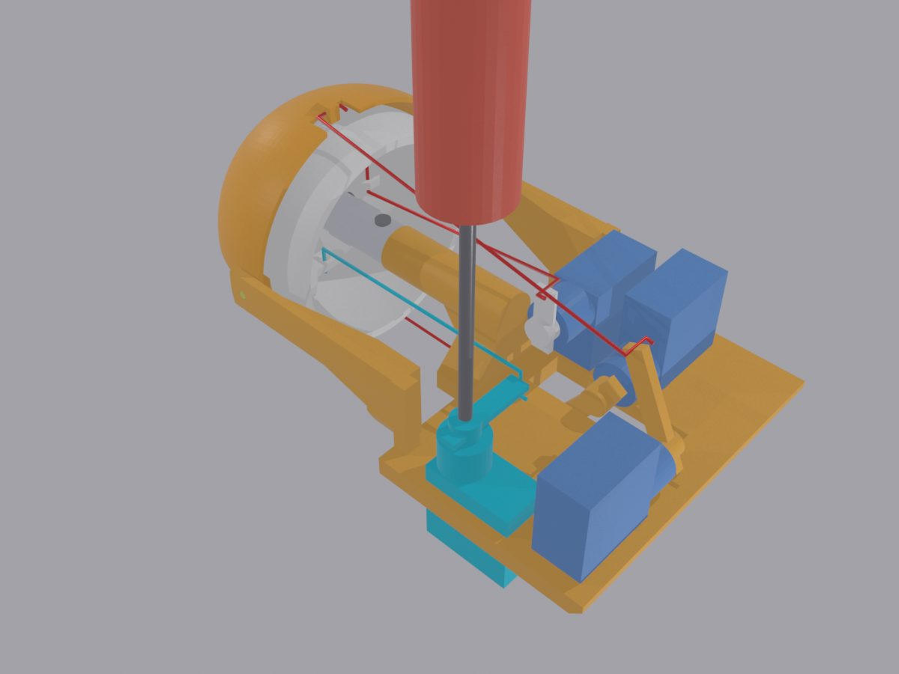
Kabel wychodzi z przedniej ściany przy spodzie, pod płytą: najpierw przełóż kabel w dół przez gniazdo, potem wsuń serwo (luz 0,2 na stronę; przy oporze zeskrob ok. 1 mm z przedniej ścianki gniazda). Serwo wkładasz z góry w gniazdo na wylot, ucha leżą na płycie, klej. Pręt L–P jak G–D: noga „Z” 7 w języczku L–P (otwór na środku), zagięcie do pręta od strony +y, drugi koniec w otwór 17,5 orczyka. Orczyk ramieniem w −x, wkręt z góry — nad nim nic nie ma.
Dalej: test ruchu i kalibracja na stole (krok 10), potem montaż w dyni (krok 11) według instrukcji tekstowej.